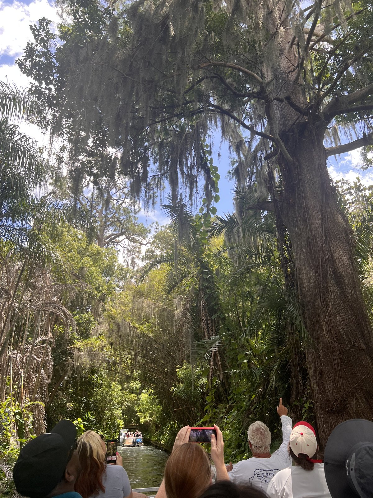

Ebuka Philip Oguchi
I develop authentication, message-integrity verification, and trust-establishment mechanisms for emerging wireless and cyber-physical systems. My research combines wireless measurements, physical-layer security, signal processing, machine learning, and lightweight protocols to protect communication in resource-constrained environments.
I am an Assistant Professor of Computer and Information Sciences at Spelman College. I received my Ph.D. in Computer Science from the University of Nebraska–Lincoln in 2025.

004 Publications
Peer-reviewed journal articles
Peer-reviewed conference papers
Submitted manuscripts
Dissertation, theses, and posters
002 Research
My research develops authentication, message-integrity verification, and trust-establishment mechanisms for emerging wireless and cyber-physical systems, with particular attention to resource-constrained and adversarial environments.
Underground sensor network security
Autonomous & vehicular network credential verification
Molecular / nano-scale communication security
Physical-layer & location verification
Applied machine learning for adversarial environments
Broadening participation in computing — inclusive curriculum design
Wireless testbeds and software-defined radio · signal and channel analysis · machine learning · embedded prototyping · formal security verification · Python, MATLAB, C/C++, USRP, GNU Radio, and ProVerif
Active Projects
Agricultural IoT Security
Goal — Establishing trust in underground sensor networks where physical access is difficult.
Method — Physical-layer channel features combined with lightweight cryptographic primitives, without draining sensor batteries.
Autonomous Vehicle Security
Goal — Detecting forged or inconsistent messages in connected and autonomous vehicle networks.
Method — Trajectory and motion-vector information helps determine whether transmitted messages are consistent with observed vehicle behavior.
Wireless Location & Channel Fingerprinting
Goal — Authenticating wireless devices and transmissions using environment-dependent signal characteristics.
Method — Signal processing and machine learning over channel measurements collected in underground and over-the-air environments.
Molecular Communication Security
Goal — Securing nano-scale communication in biological environments.
Method — Lightweight protocols preventing bootstrapping attacks between nanodevices where traditional cryptography is too heavy.
LocaRadio: RF-Fingerprint Location Authentication
Goal — Verifying device location as an authentication factor for wireless networks.
Method — RF-fingerprint-based location authentication, submitted to IEEE ICNC.
003 Research Support
Senior Personnel / Collaborator, NSF Center for Distributed Confidential Computing (CDCC)
An NSF-supported multi-institutional research initiative focused on scalable and verifiable confidential computing.
Collaborator, Google.org Cybersecurity Clinic Grant
Supporting the development of the Spelman College Cybersecurity Clinic and its work with under-resourced organizations.
006 Latest News
Our paper A Review of Confidentiality, Integrity, and Availability Challenges in Molecular Communications was accepted for publication in IEEE Transactions on Molecular, Biological, and Multi-Scale Communications.
Our paper Soil-Assisted Trust Establishment for Underground Wireless Networks was accepted for publication in IEEE Transactions on Dependable and Secure Computing (TDSC).
Selected as faculty Fellow for the ACS Teaching & Learning Workshop at Rollins College, FL, representing Spelman College.
Judged the Spelman College Hack-A-Bot Competition.
Joined the NSF Center for Distributed Confidential Computing as Senior Personnel and the Google.org Cybersecurity Clinic initiative as a collaborator.
Joined Spelman College as a tenure-track Assistant Professor (CIS).
Ph.D. in Computer Science, University of Nebraska–Lincoln. Recipient, Outstanding Dissertation Award, School of Computing.
Awarded the Mary E. and Elmer H. Dohrmann Fellowship, University of Nebraska–Lincoln.
005 Teaching & Mentoring
Assistant Professor (Tenure Track)
Department of Computer and Information Sciences. Teaching SCIS 216 Computer Organization and Design (lecture), SCIS 216L Computer Organization and Design (lab), and SCIS 123 C++ Programming.
Teaching Assistant — Cryptography & Security (CSCE 477/877)
Supported labs on RSA, hash functions, and network security protocols. Assisted students implementing cryptographic primitives and analyzing network security protocols.
Teaching Assistant — Computer Architecture/Software
- Recipient, Google CS Research Mentorship Program (CSRMP)
- Member, Institute for African American Mentoring in Computing Sciences (iAAMCS)
- Students mentored — Hakim Lado (Ph.D. student) and Arielle Monson (undergraduate student)
- Fellow, ACS Teaching & Learning Workshop (June 2026) — Rollins College, FL. Selected as faculty nominee representing Spelman College.
- Faculty Onboarding and Mentorship Program (Jan 2026 – Present) — Spelman College, Atlanta, GA.
007 Service & Recognition
- Ph.D. Dissertation Award (2025) — School of Computing, UNL
- Mary E. and Elmer H. Dohrmann Fellowship (2023) — UNL, 1 of 6 recipients
- Chinese Government Scholarship (2018) — Changchun University, 1 of 500 global recipients
- Judge — Spelman College Hack-A-Bot Competition (April 2026), UNL College of Engineering Poster Fair
- Journal Reviewer — IEEE Transactions on Dependable and Secure Computing (2026), IEEE Transactions on Industrial Informatics, ACM Transactions on Cyber-Physical Systems (2025)
- Conference Reviewer — EAI SecureComm, ACM WiSec
008 Selected Technical Work
Wireless Network Security Analysis
Controlled laboratory analysis of weaknesses in legacy and contemporary wireless authentication protocols.
Molecular Security
Error-correction simulation for reliable communication in nano-scale molecular environments.
IoT Mutual Auth
Formal verification of secure authentication protocols to prevent man-in-the-middle attacks.
009 Beyond the Lab
Outside research and teaching, I enjoy travel, outdoor activities, and exploring new places and cultures.

